Travel Essay
自転車で巡る東京の静けさと記憶

旅の始まり
私は東京をぐるりと巡る小さな旅に出ました。電車でもなく、観光客がよく通る定番のルートでもなく、自転車と自分自身の好奇心だけを頼りに進む旅です。
自転車を選んだのは、この街を別の角度から眺めたかったからです。小さなものに気づけるほどゆっくりと、そして東京の息遣いを感じられるほど近くで。私のような外国人だからこそ、地元の日常の中に「孤独」と「ワクワク」が入り混じった特別な感情を抱くのかもしれません。小さな坂道、高層ビルに挟まれた古い家、街中の小さな菜園……そのすべてが、私をいつもより長く立ち止まらせました。
旅のルート
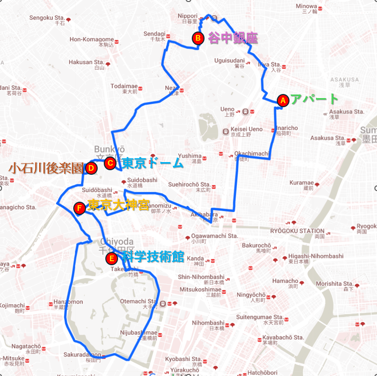
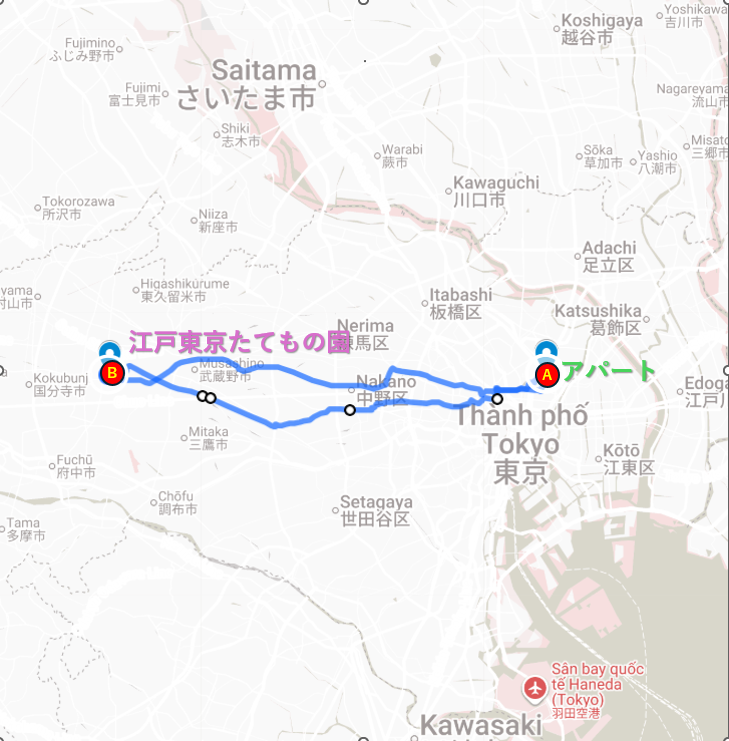
1. 谷中銀座
最初の目的地は、谷中銀座です。ここは超高層ビルの華やかさを脱ぎ捨て、古き良き穏やかな東京に戻ったような場所でした。空気には記憶の香りが染み付いているかのようです。観光客のゆったりとした足取りや小さな商店、穏やかな生活のリズム。ここでは時間は時計の針ではなく、人々のゆとりによって流れているように感じられました。広大な東京の中で、ここは街に残された「句読点」のような場所であり、人々がゆっくりと歩き、語り合い、素朴に暮らす時間がまだ残されていました。
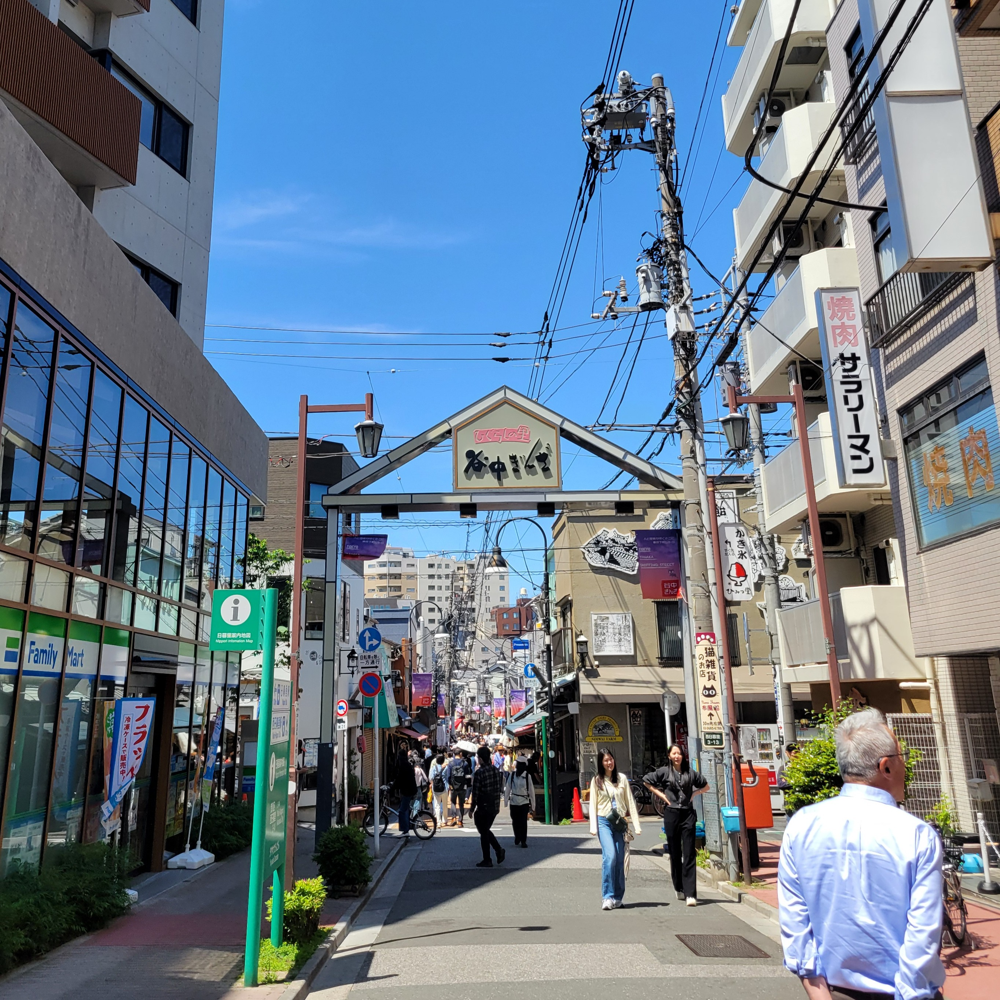
2. 東京ドーム
谷中の静寂を後にし、東京ドームへ向かうと、すぐに野球ファンたちの熱狂的なエネルギーに包まれました。外にいるだけで、音楽と歓声による賑やかさが伝わってきます。その群衆の中に立つと、熱狂の渦の中を漂う独立した観察者になったような気分になると同時に、輪の外側にいる個人の孤独もはっきりと感じました。大都会に住むということは、時として大勢の人の中にいながら、自分だけの世界を静かに抱えて生きることなのかもしれません。球場の中に入って、その熱気を肌で感じることができなかったのは少し残念でした。

3. 都立小石川後楽園と皇居のお濠
東京ドームのすぐ隣にある小石川後楽園を訪れました。一歩足を踏み入れるだけで心地よさとリラックスを感じられる、本当に清らかな場所でした。混雑した東京の真ん中で、ここは静寂を求める人のための、まるで小さな熱帯雨林のような休息の場所です。
その後、皇居の濠の周りを走りました。ここは緑豊かな空間で、散歩や運動に最適なコースです。大きな並木の下を黙々と走るランナーたちを見て、東京は多くの人が思うような「冷たい街」ではないのだとふと感じました。ガラス張りのビルや急ぎ足の生活の裏側には、現代社会のプレッシャーの中で自分だけの「呼吸ができる場所」を必死に探している人たちがいるのです。

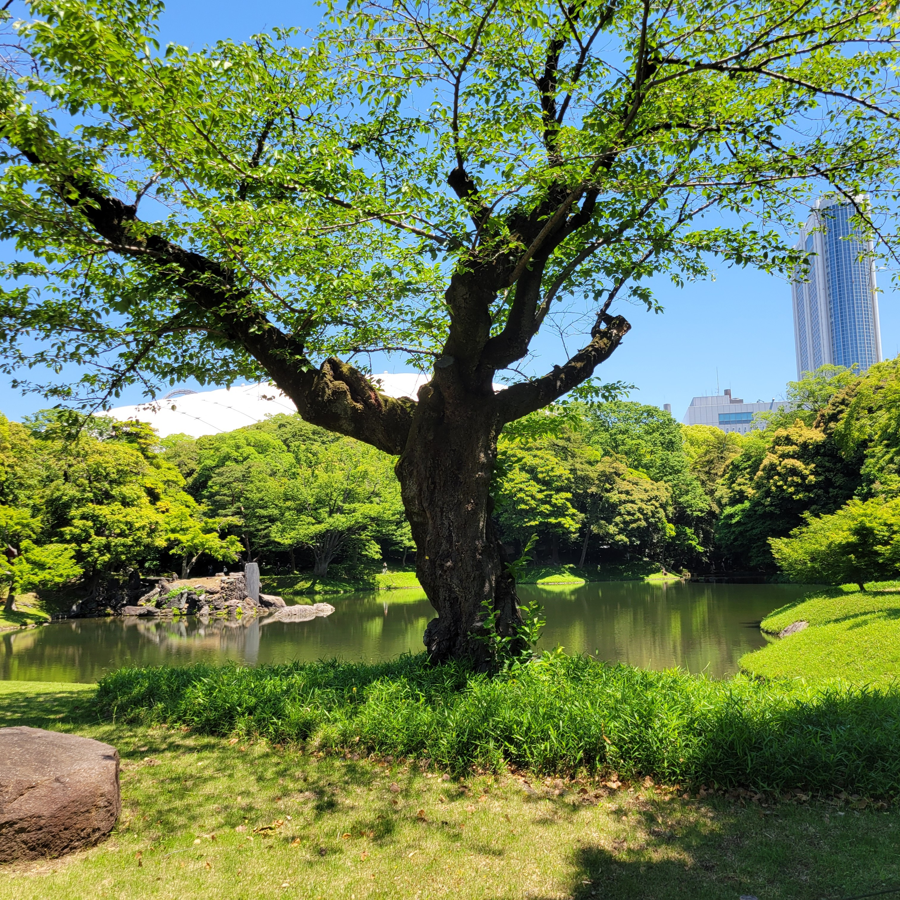
4. 科学技術館
次に立ち寄ったのは科学技術館です。ここでは過去と未来の車輪が不思議な形で交差していました。素朴な木製の自転車から、複雑な構造を持つ現代のモデルまで、私はそれらを前に静かに立ち尽くしました。実験に夢中になる子供たちを見て、無邪気な好奇心こそが知性と教育の発展を支える最も息の長い原動力なのだと気づかされました。日本の近代化は技術だけでなく、学ぶことが「記憶」ではなく「世界に直接触れること」であるよう、幼い頃から好奇心を育む姿勢から来ているのかもしれません。
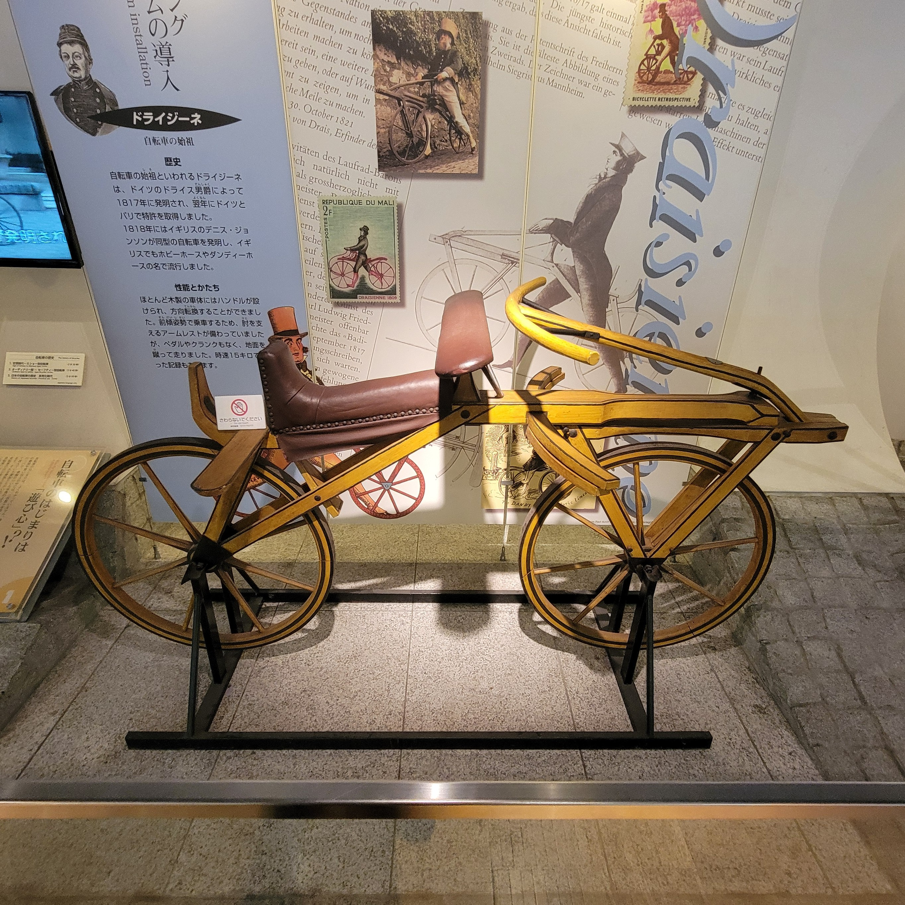

5. 東京大神宮
その道は東京大神宮へと続いていました。私は、良縁を願って静かに祈る若者たちの姿を眺めました。数千万人が暮らすこの街で、誰もが心の奥底に、広い世界の中で自分と響き合える誰かとの繋がりを求めています。社会がどれほど現代化しても、人間は結局のところ、愛されること、そして誰かに深く理解されることを常に望んでいるのです。
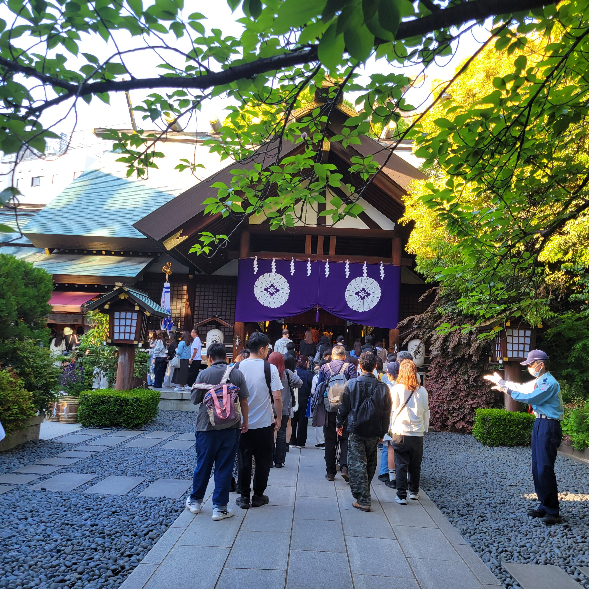
6. 江戸東京たてもの園
旅の感情が最も深まったのは、江戸東京たてもの園に辿り着いた時でした。この日は、高層ビルから街の中に点在する小さな菜園や農園まで、景色が刻々と変わる中で最も長い距離を漕ぎました。坂道で足が疲れ果てたこともありましたが、その疲れこそが、単に東京を通り過ぎるのではなく、この旅を「生きている」のだと実感させてくれました。

門をくぐると、まるでタイムスリップしたかのようでした。目の前には古い茅葺き屋根の家や、赤い瓦と白いバルコニーが特徴的な明治時代の洋館が並び、日本の激動の変遷を物語っていました。最も印象的だったのは、かつての日本人の暮らしの中に直接足を踏み入れることができたことです。古い木の質感、かまどの煙の匂い、窓から差し込む淡い光。ここは博物館というよりも、今も生き続けている「記憶の一片」のように感じられました。
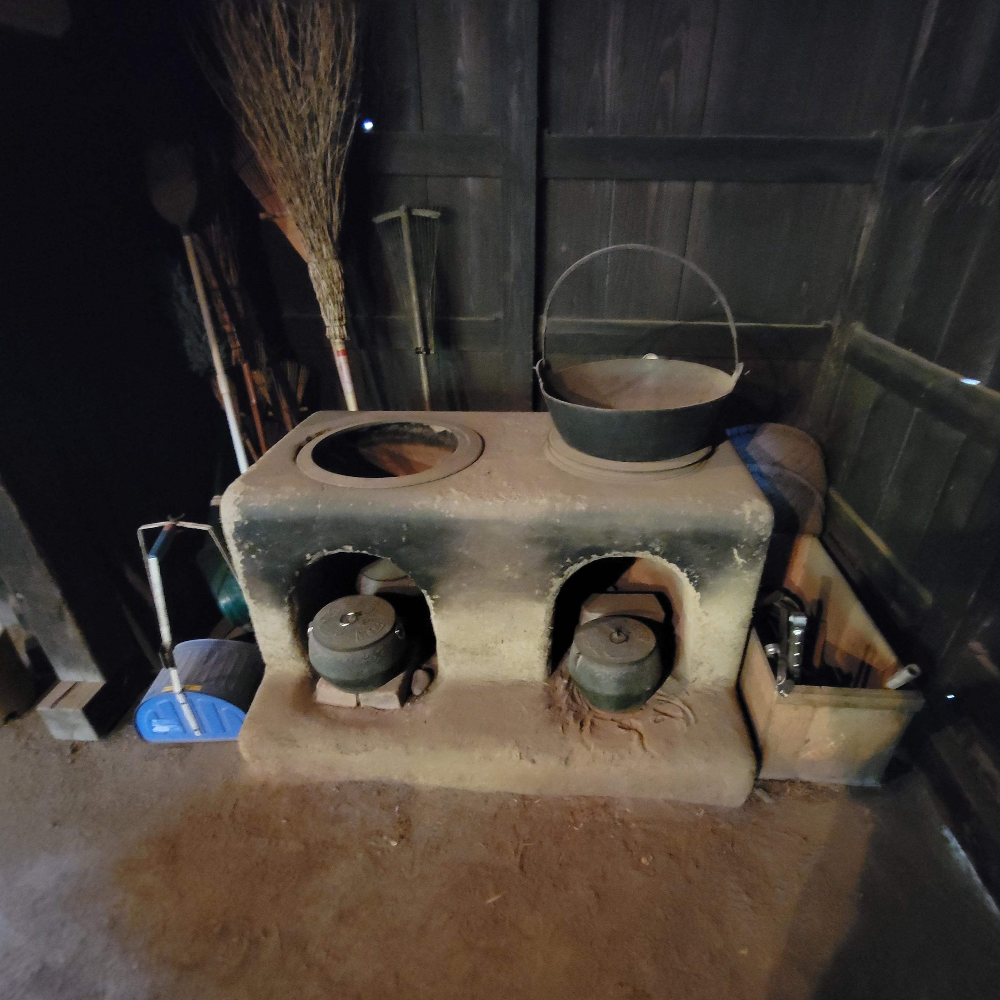
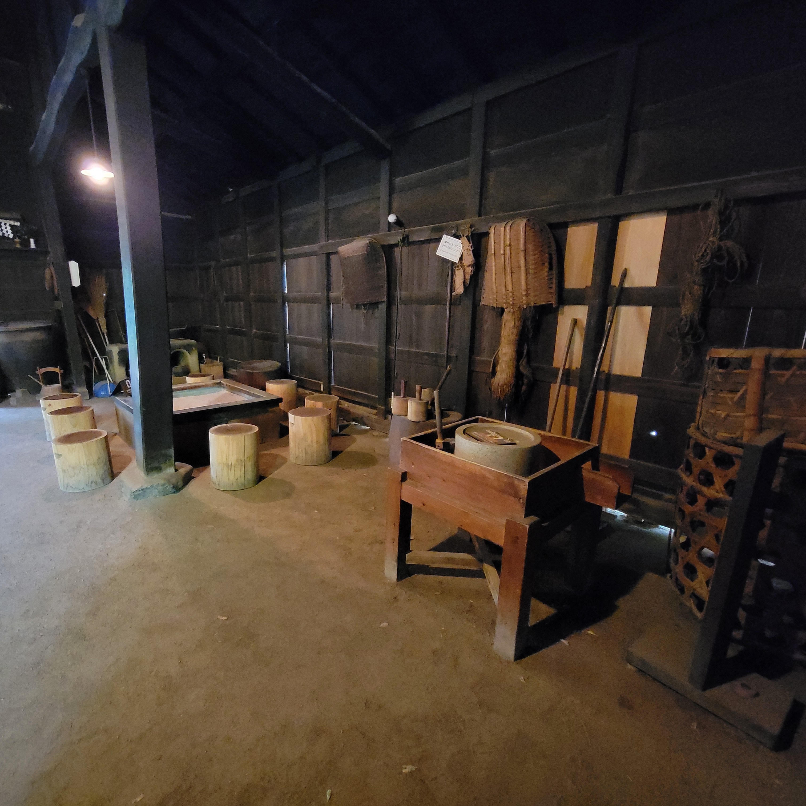
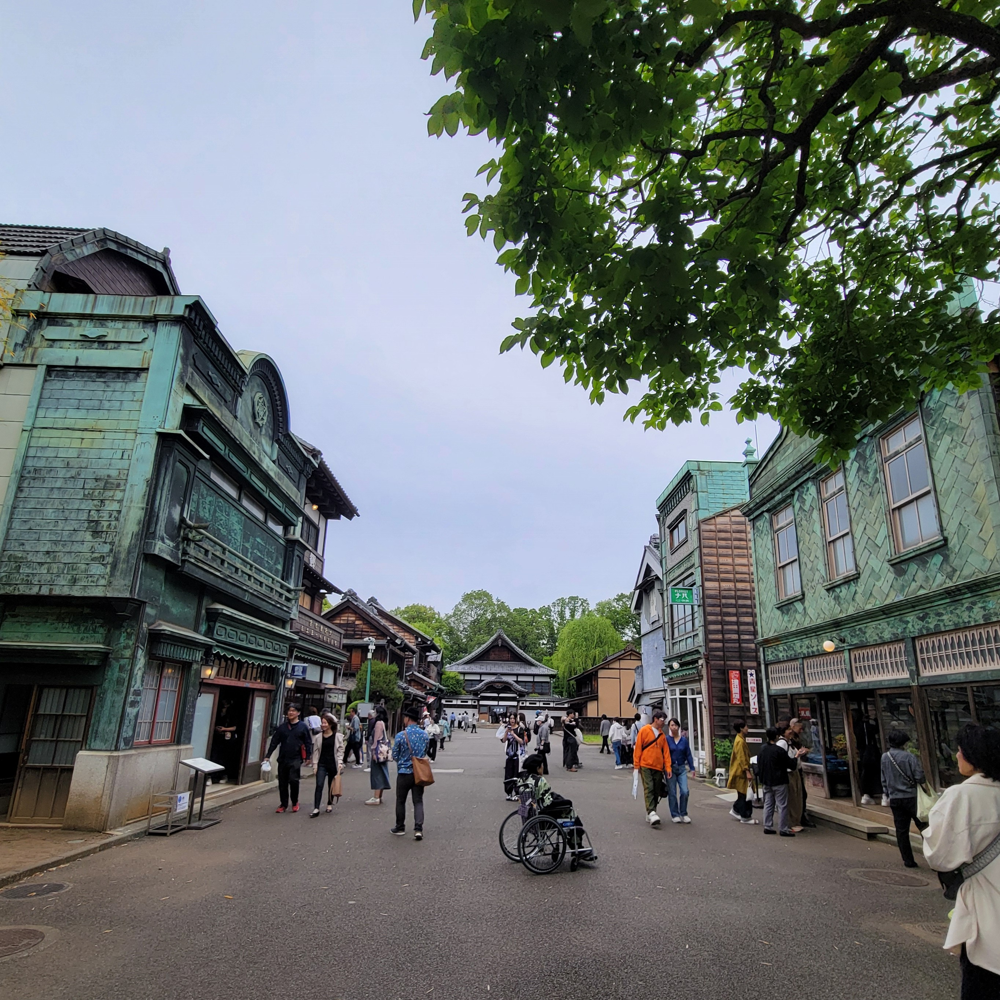
土製のかまどや農具が整理されている様子を見て、ベトナムの古い家との共通点が多いことに驚きました。言語や文化は違えど、かつてのアジアの人々は、生活様式や食事の温もり、そして家との絆において、とても近い距離で生きていたのだと気づかされた瞬間でした。外では古いバスや黄色い路面電車が、歴史の証人として静かに佇んでいました。昔の商店街を再現したエリアを歩きながら、かつてここで響いていたであろう商人の威勢のいい声や、走り回る子供たちの姿を想像しました。外国人として、日本の素晴らしさは近代化だけでなく、自らの魂を守るかのように過去を大切に保存している姿勢にあると感じました。
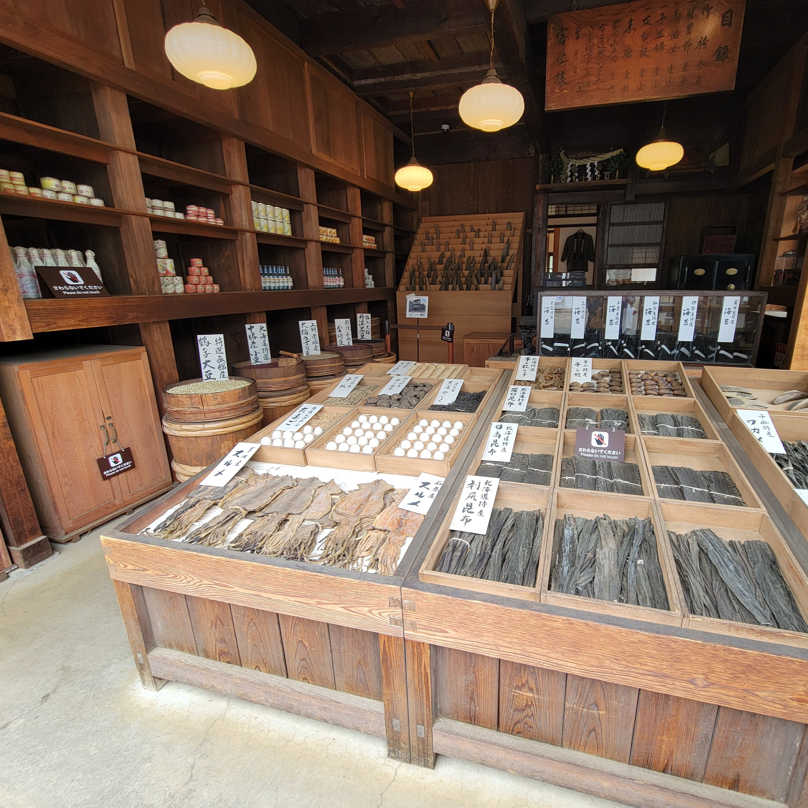
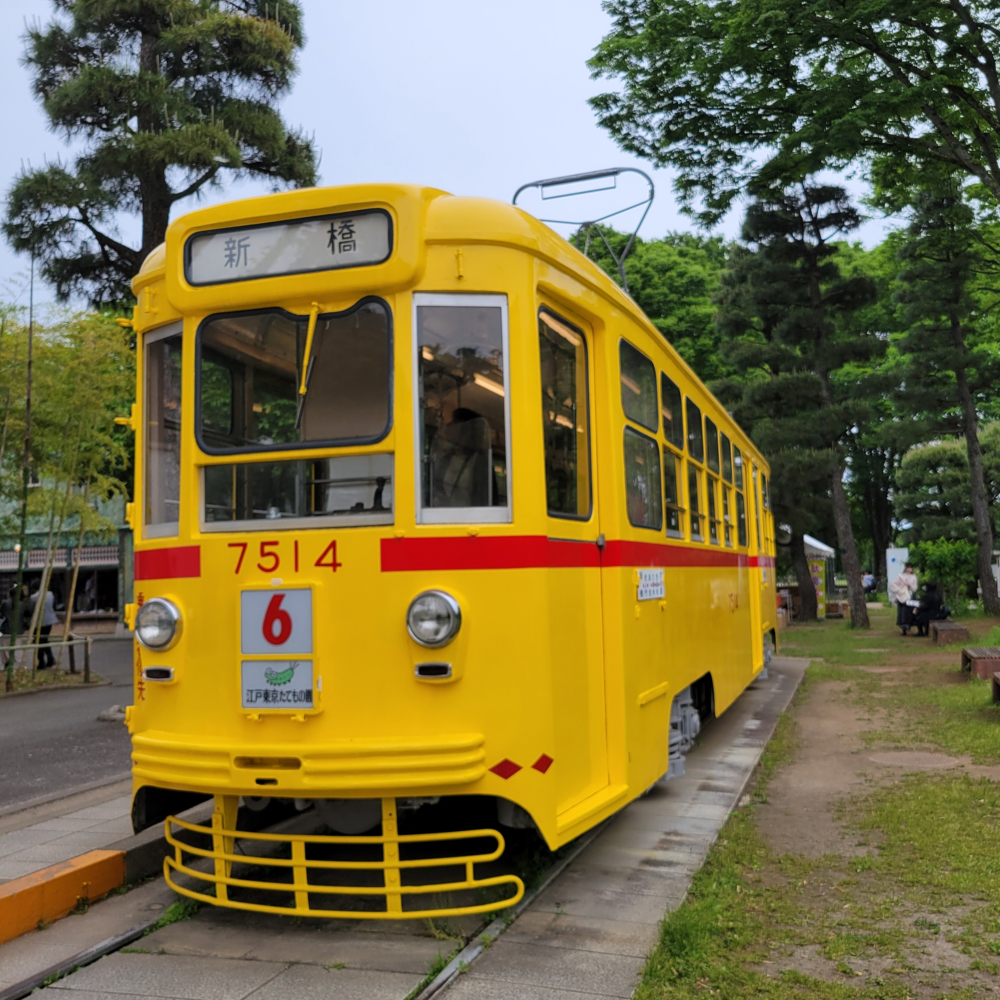
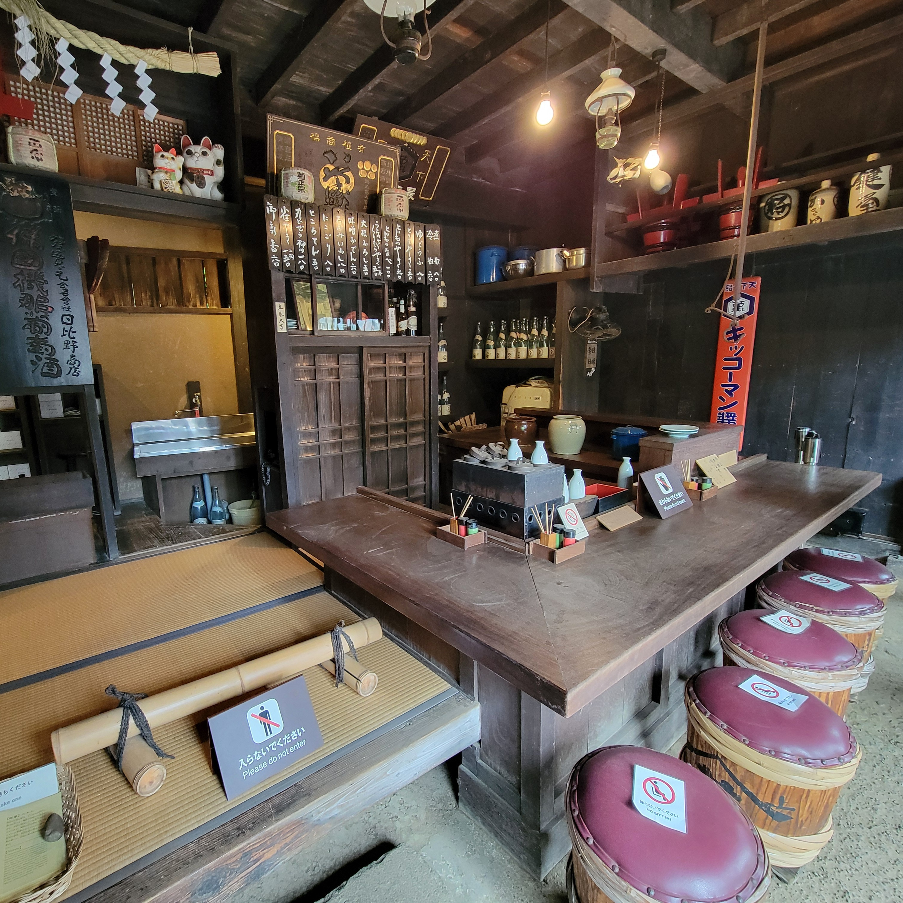
7. 結びに
旅を終えて心に残っているのは、訪れた場所の記憶だけではありません。私の中で東京の見え方が変わったことそのものです。この街は、かつて思っていたようなビル群や忙しさだけの場所ではありませんでした。その内側には、人間味あふれる静寂や、時間の息遣いが残る古い街並み、小さな坂道、緑の木々、そして静かに自分の人生を歩む人々が隠れていました。
自転車の旅の価値は、どれほど遠くへ行ったかではなく、どれほど東京を「ゆっくり」と感じられたかにあるのだと思います。街並みの変化、古い木の匂い、かまどの煙、スタジアムからの歓声、そして皇居の濠沿いを吹き抜ける涼しい風。ペダルを回すたびに、私はこの街と少しずつ繋がっていく感覚を覚えました。
思い出深い旅とは、必ずしも明確な目的があるものではなく、自由に彷徨い、好奇心のままに、自分の目と心でありのままを感じる日々のことなのだと、改めて気づかされました。
今回の旅の家計簿（合計 4,590円）
| 項目 | 金額 |
|---|---|
| 小石川後楽園 入園料 | 300円 |
| 小石川後楽園の団子 | 500円 |
| 科学技術館 入館料 | 950円 |
| 神楽坂のラーメン | 1,100円 |
| 江戸東京たてもの園 入園料 | 400円 |
| 江戸東京たてもの園の牛丼 | 780円 |
| バナナ | 240円 |
| 水 | 320円 |
FAQ
この旅はどの交通手段で巡りましたか？
主に自転車で巡りました。街を近くで感じ、小さな景色に気づくためです。
紹介している場所はどこですか？
谷中銀座、東京ドーム、小石川後楽園、皇居のお濠、科学技術館、東京大神宮、江戸東京たてもの園です。